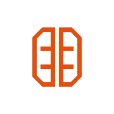

Treinamento de Estagiários – Panobianco Vila Império
Avaliação Mensal de Musculação – 2026
Avaliações ainda não liberadas.
Início oficial: Janeiro de 2026.
Digite seu nome completo:
Iniciar Avaliação